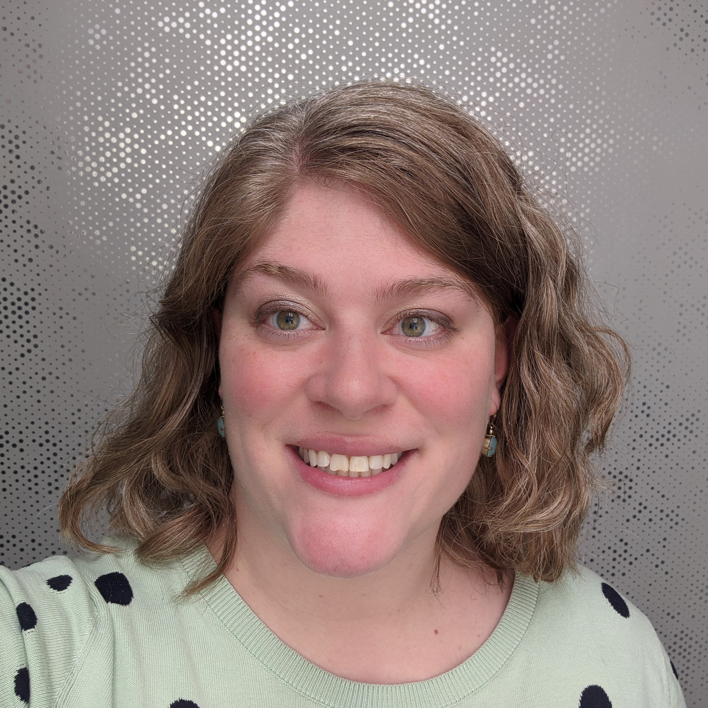

Hi There!
I'm Claire: a wine and cheese enthusiast, bibliophile, and animal lover. I was born in Houston (literally my only memory of Texas is sweating) but moved to Atlanta when I was 5 (also sweaty). Four years ago, I convinced my then-boyfriend/now-husband to relocate with me to Chattanooga (STILL sweaty, clearly I’m doing this wrong). I managed to attend the University of Georgia without ever developing even a passing interest in football, where I decided to major in psychology because I thought it would be relevant no matter what I decided to do in life. Ten years later, that’s still pretty true. After an illustrious hotel sales career, I’m now studying digital media at Chattanooga State in anticipation of my next act.